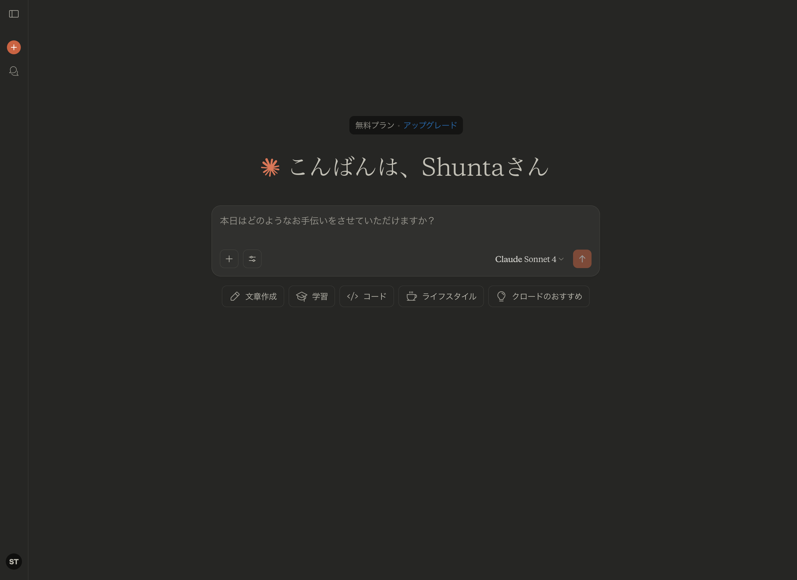
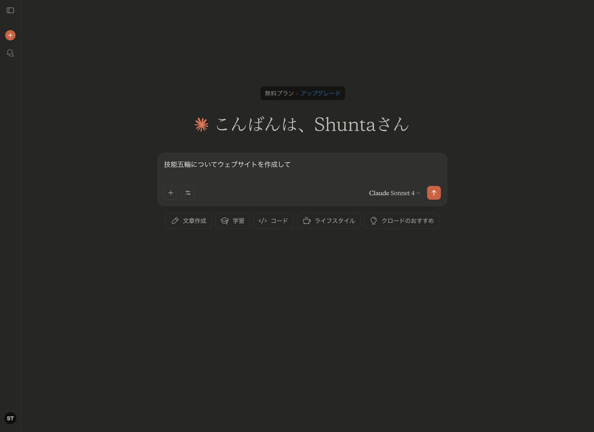
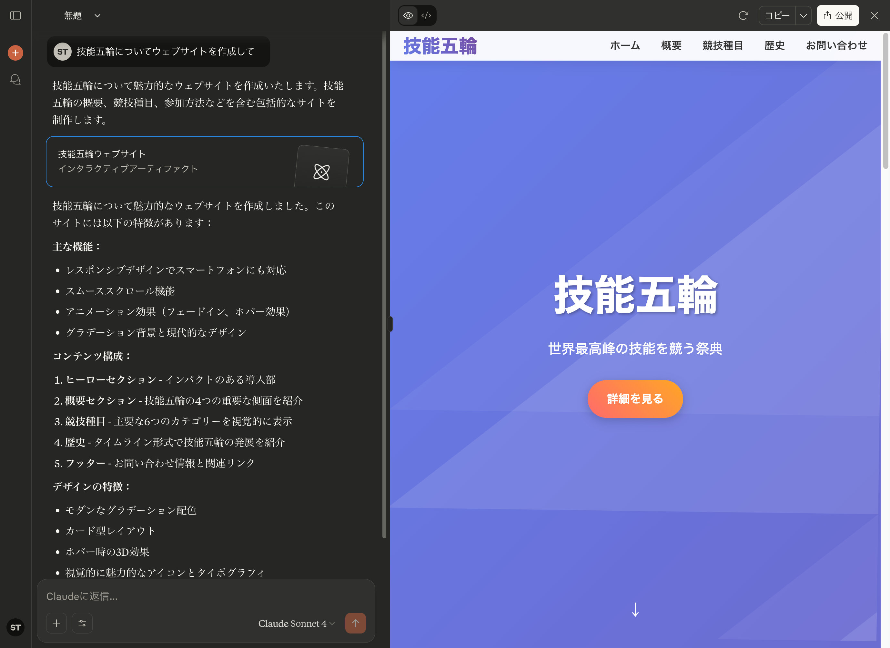
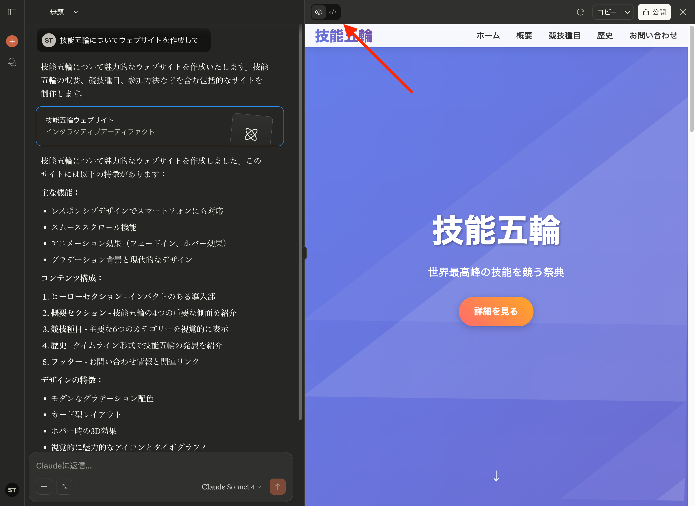

今回はAIと共に技能五輪を理解していきます。
本日は技能五輪ウェブデザイン競技の世界を体験するワークショップです。生成AI（Claude）を活用しながら、実際にウェブアプリケーションを作成し、プロフェッショナルレベルの技術に触れることができます。
ここに技能五輪全国大会ウェブデザイン職種のデータが入っているので、AIとチャットして自由に理解することができます。先生に質問するより気軽に、正確な情報を提供してくれます。
わからないことがあればAIに質問するを徹底してください！！
これくらいの内容であればAIが全て回答してくれます
22歳以下の若者が技術を競う国際大会
デジタル社会の基盤技術を競う重要な分野
創造性と技術力の両方が求められる高度な競技
ウェブ上のインターフェース設計・構築を行い、ユーザーに最適な形で情報を提供する技能を競う職種です。現代のデジタル社会において、ウェブ技術は情報プラットフォームの中心となっており、非常に重要なスキルとされています。
クライアントの要求を正確に把握する力
HTML/CSS、JavaScript、PHP、データベース等の幅広い技術
フロントエンド開発、バックエンド開発、デザイン、セキュリティ対策
数年で変化する業界動向をキャッチアップする力
4つのモジュール、2日間（計8時間30分）
7つのモジュール、4日間、より高度な技能とスピードが要求される
デザイン・レイアウト・フロントエンド・バックエンドの基本技能を高速で処理
PHPフレームワークとデータベースを用いた管理システム構築
JavaScriptを中心としたインタラクティブなゲーム開発
レスポンシブデザインによる商品プロモーションサイト制作
実際にウェブアプリを作って動かしてみる
ウェブ技術の基本構造を理解する
技能五輪選手のすごさを実感する
ブラウザ上で動作するアプリのことです。スマホアプリをダウンロードしなくても、ブラウザでアクセスするだけで使えるのが特徴です。
情報を見るだけのサイト（会社のホームページ、ニュースサイトなど）
内容が変わらない、一方向の情報提供
ユーザーの操作に反応して内容が変わる
双方向のやりとりができる
動画検索、再生、コメント投稿
写真投稿、フィルター加工、いいね
地図検索、ルート案内、リアルタイム交通情報
ブラウザで遊べるゲーム
商品検索、カート機能、決済
ウェブアプリケーションは主に3つの技術で構成されています：
<h1>見出し</h1>
<p>段落</p>
<button>ボタン</button>ページの骨組みを作る
見出し、段落、画像、リンクなどの要素を定義
button {
background-color: #007bff;
color: white;
padding: 10px 20px;
border-radius: 5px;
}色、フォント、レイアウトを制御
美しく使いやすいデザインを実現
function greetUser() {
const name = document.getElementById('nameInput').value;
alert('こんにちは、' + name + 'さん！');
}ユーザーの操作に反応する機能
インタラクティブな動作を実現
ログイン後はこの画面になると思います。
真ん中のチャットボックスにプロンプト（AIへの命令）を記述します

送信するとAIが回答してウェブサイトを作ってくれます
アーティファクトというものがウェブサイトを表示する機能です。
完成したウェブサイトを確認してみましょう！
ここのボタンでプログラムのコードに切り替えられます

コードを表示した時の画面
ここでウェブサイトはどのように作られているのか確認できます
全て理解して記述できるように訓練しているのが技能五輪の選手たちです
HTML, CSS, JavaScriptがどこで使われているのか見つけましょう
以下の仕様でタスク管理ウェブアプリを作成してください：
【機能要件】
- タスクの追加、削除、完了マーク
- 優先度の設定（高・中・低）
- 期限の設定と表示
【デザイン要件】
- モダンでシンプルなデザイン
- 青を基調とした配色
- スマートフォン対応
【技術要件】
- HTML、CSS、JavaScriptのみ使用
- 1つのファイルで完結作成内容: 名前・年齢・趣味を入力して自己紹介文を生成
学習ポイント:
作成内容: メモの追加・削除・編集機能付きアプリ
学習ポイント:
作成内容: 各自のアイデアでオリジナルアプリを開発
アイデア例:
先ほどAIに書かせたプログラムを全て理解して手で記述してアプリを作っています。プログラムのコードは一文字ずつ意味があるので理解していないと作成できません。課題の仕様を全て理解して、それをコードに落とし込んでいます。
ウェブ技術の世界は広く、常に新しい技術が生まれています。継続的な学習と実践を通じて、技能五輪選手レベルの技術力を目指しましょう！